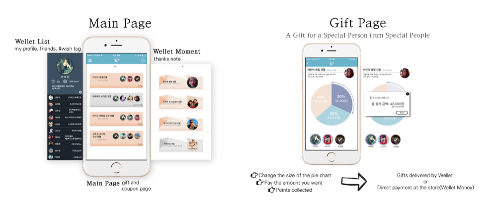
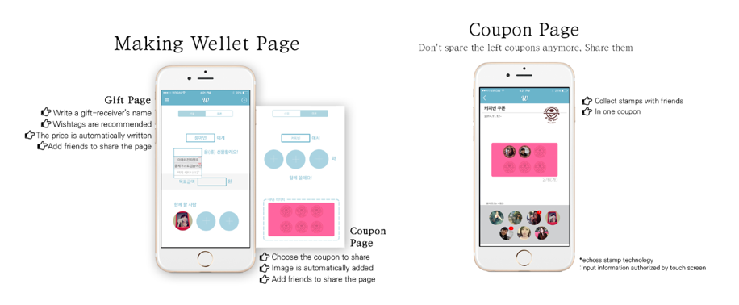
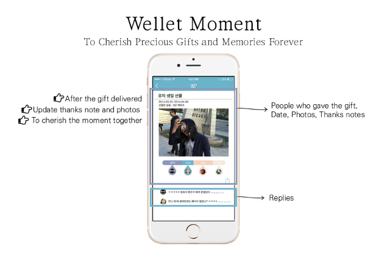
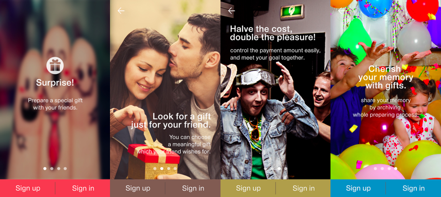
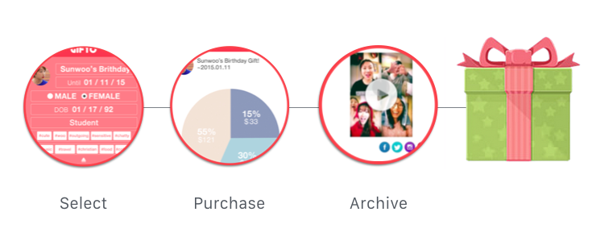

Nov 2014 - Nov 2015 | CEO & UX Developer, Gifto,Inc.
Gifto is a gift curation service using a mobile application that makes the whole gift giving process more convenient and meaningful. As a CEO, I successfully pitched at KOTRA Silicon Valley, selected as Top 2 startups of the program and established the company in San Jose, CA. I also designed a wireframe and iteratively implemented the prototypes as a UX developer.
Adobe Suite, Sketch, HTML/CSS, JavaScript, UX design/development, Project Management
In our daily lives, there are lots of situations that people give presents to each other on memorial days such as wedding, graduation or birthday. We found that many people have various difficulties in giving presents because it is hard to pick what to give when they are not sure about the receiver’s taste.
We devised a mobile application that makes the whole gift giving process more convenient and meaningful. By using big data, Gifto automatically recommends a perfect gift which is a good fit for the receiver.In addition, it provides a unique way of payment in which friends can collect and pay money together for someone special.
At first, Gifto was not a gift curation application but a collective payment application. Whenever we used to collect money for buying a gift for our friend together, we had to transfer money using our bank accounts. Since it was time-consuming and charged commission fees to all of us, we wanted to make a mobile application which helps this process easier.
With the application, users can make their own wish-list which shows their taste to the friends. When they want to buy a gift for a friend, they can easily make a group to collect the money together for the gift without transfering money back and forth through their bank account, which is similar way how the crowdfunding service works.
Also, they can collect coffee coupons together so that it is more easier and faster to collect the whole coupon.
After achieving their goal, users can check their contribution and share their memory by writing comments.
At this point, we conducted several walkthrough using the prototype with users and found that it would make the identity and goal of this service confusing when all of these features are fetched together on one application. To make the application more reasonable and attractive, we decided to pivot our initial idea and focus on the concept of gift.
 Rather than having both features as a collective payment and wish-list with a same priority, we put stress on the gift process itself. Our team reorganized the value proposition canvas and tried to focus the direction as an online gift marketplace. By understanding users’ personal taste and giving them a recommendation, it can be easier to choose what to give to their friends. When they purchase a gift, they can use the shared payment system if necessary, and the application offers a surprise congratulations card, which makes the day special and cherishable.
Based on the paper prototypes, I organized the hierarchy to implement the seamless user flow within the whole gift process.
I designed mobile UI using Sketch and developed a high fidelity prototype on the browser using HTML/CSS, and JavaScript.
2015.01
UniKamp Silicon Valley, KOTRA(Korea Trade-Investment Promotion Agency), Grand Prize
2014.11
2014 Imagination Idea Contest, Sogang Univ. , Grand Prize